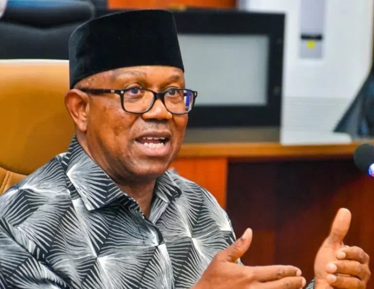

2027: Tinubu failed to fulfil his promises, he must go – Obi

Peter Obi, the Nigeria Democratic Congress presidential candidate, called on voters to remove President Bola Tinubu in the 2027 election, saying a change of government was needed for Nigeria to achieve development. Speaking to residents at an event in Aba, Abia State, on Friday, he accused the Tinubu administration of failing to deliver on campaign promises and worsening poverty. Obi also argued that the presidency demanded energy and commitment.
Obi said a government led by him and his running mate, Senator Rabiu Kwankwaso, would work to unite the country and expand economic and social development. He said the proposed administration would generate, transmit and distribute at least 10,000 megawatts of electricity, and that borrowing should be directed towards investment. He also pledged to shift the economy from consumption towards production, job creation and prosperity.
The candidate criticised the Federal Government’s borrowing, alleging that the Tinubu administration had borrowed more than previous administrations combined without results visible to Nigerians. He questioned how public loans were being used and said his administration would ensure public funds benefited the public. Obi further claimed that the number of people living in poverty had risen from 87 million when Tinubu took office to more than 140 million. He promised greater investment in education and healthcare, citing youth unemployment as a concern.
On Abia’s economy, Obi pledged to develop Aba into an export hub and connect it with Port Harcourt to create an economic corridor within the first years of his administration. He also promised action on insecurity, including the abduction of schoolchildren, and said national unity would be a priority. Obi described his vision as a country where children from any background could have the opportunity to succeed.
Source: Vanguard